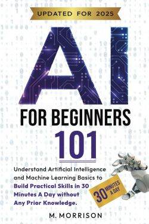

References
- Ahuja, M. R., & Kumar, D. G. (2024). Exploring emerging challenges, prospects, and legal implications: Copyright and patent laws in AI-generated works. Journal of Intellectual Property Rights, 29(3), 165–172. https://doi.org/10.56042/jipr.v29i3.3259
- Amidi, A. (2024, January 31). New Report Confirms Worst Fears: AI Will Disrupt Countless Animation Jobs Over Next 3 Years. Cartoon Brew. https://www.cartoonbrew.com/artist-rights/union-study-says-generative-ai-will-disrupt-204000-jobs-three-years-237495.html
- Barfield, C. (2024, September 19). Guillermo del Toro says A.I. CAN’T CREATE art & can only do “semi-compelling screensavers.” The Playlist. https://theplaylist.net/guillermo-del-toro-says-a-i-cant-create-art-can-only-do-semi-compelling-screensavers-20240918/
- Bulat, N. (2024). Protection of non-original objects generated by artificial intelligence: the Ukrainian copyright law approach. International Journal of Law & Information Technology, 32(1), 1–15. https://doi-org.proxy.ulib.uits.iu.edu/10.1093/ijlit/eaae010
- Buxton, A. (Host). ( 2023, May). Tom Hanks (no. 201) [audio Podcast episode]. In The Adam Buxton Podcast. https://www.adam-buxton.co.uk/podcasts/lpbk8k9zbhx54zt-8yl8m-mdzjc-whmf8-2lwfg-emz92-cxnlh-ghwwh-r34cb-sfwnb-kmjcj-x8cgn-gzmzx-xfpt5-x6cma-d8lbc
- Centivany, A. (2024). Mining, scraping, training, generating: Copyright implications of generative AI. Proceedings of the Association for Information Science & Technology, 61(1), 68–79. https://doi.org/10.1002/pra2.1009
- Copyright Alliance. (n.d.). What is Fair Use. https://copyrightalliance.org/faqs/what-is-fair-use/
- Endicott, S. (2024, June 28). Ever put content on the web? Microsoft says that it’s okay for them to steal it because it’s “freeware.” Windows Central. https://www.windowscentral.com/software-apps/ever-put-content-on-the-web-microsoft-says-that-its-okay-for-them-to-steal-it-because-its-freeware
- Gaskin, S. (2021, October 7). Google Reconstructs Lost Gustav Klimt Paintings With Machine Learning. Ocula. https://ocula.com/magazine/art-news/google-reconstructs-lost-klimt-paintings-with-ai/
- Gates, B. (2023). The Age of AI has begun. Gatesnotes.com. https://www.gatesnotes.com/the-age-of-ai-has-begun
- Gooding, R. E. (2024). Recognizing partial AI authorship: Toward a more permissive copyright regime. Wisconsin Law Review, 2024(4), 1333–1365. https://doi.org/10.59015/wlr.ZDOK3241
- Hoshiar, S., & Kiran, S. (2024). Copyright in the age of artificial intelligence: Unravelling the complexities for the protection of AI-generated work. 2024 ITU Kaleidoscope: Innovation and Digital Transformation for a Sustainable World (ITU K), 1–7. https://doi.org/ITUK62727.2024.10772817
- Klosek, K. (2024, January 23). Training generative AI models on copyrighted works is fair use. Association of Research Libraries. https://www.arl.org/blog/training-generative-ai-models-on-copyrighted-works-is-fair-use/
- Lee, C. M. (2025, March 27). OpenAI just made it harder to turn your pics into Studio Ghibli-style images. Business Insider. https://www.businessinsider.com/openai-chatgpt-studio-ghibli-style-images-generation-grok-claude-genai-2025-3
- Li, Y. (2022). AI restoration brings “dying” masterpieces back to life, but tricks copyright? International Journal of Law & Information Technology, 30(3), 368–384. https://doi.org/10.1093/ijlit/eaac023
- Library Copyright Alliance Principles for Copyright and Artificial Intelligence. (2023, July 10). Library Copyright Alliance. https://www.librarycopyrightalliance.org/wp-content/uploads/2023/06/AI-principles.pdf
- Madigan, K. (2025, February 13). First of its kind decision finds AI training is not fair use. Copyright Alliance.https://copyrightalliance.org/ai-training-not-fair-use/
- Marr, B. (2024, May 28). How Generative AI Will Change The Jobs Of Artists And Designers. Forbes. https://www.forbes.com/sites/bernardmarr/2024/05/28/how-generative-ai-will-change-the-jobs-of-artists-and-designers/
- Novagraaf. (2024, May 1). AI and copyright: First ruling from a European Court. https://www.novagraaf.com/en/insights/ai-and-copyright-first-ruling-european-court
- Shanfeld, E. (2024, June 6). Ashton Kutcher says soon “you’ll be able to render a whole movie” using AI: “the bar is going to have to go way up” in Hollywood. Variety. https://variety.com/2024/film/news/ashton-kutcher-ai-movies-sora-hollywood-1236027196/
- Sriram, A. (2025, April 1). Ghibli effect: ChatGPT usage hits record after rollout of viral feature. Reuters. https://www.reuters.com/technology/artificial-intelligence/ghibli-effect-chatgpt-usage-hits-record-after-rollout-viral-feature-2025-04-01/
- Stewart, L. (2016, February 12). Wikimedia Says When a Monkey Takes a Selfie, No One Owns It. Newsweek. https://www.newsweek.com/lawyers-dispute-wikimedias-claims-about-monkey-selfie-copyright-265961
- Walfisz, J. (2024, December 5). A quarter of musician revenue to be lost to AI by 2028, new study finds. Euronews. https://www.euronews.com/culture/2024/12/05/a-quarter-of-musician-revenue-to-be-lost-to-ai-by-2028-new-study-finds
- Warren, S. A. & Grasser, J. (2024, March 12). Japan’s new draft guidelines on AI and copyright: Is it really OK to train AI using pirated materials? National Law Review. https://natlawreview.com/article/japans-new-draft-guidelines-ai-and-copyright-it-really-ok-train-ai-using-pirated
- Wikimedia Foundation. (2025, April 18). Monkey selfie copyright dispute. Wikipedia. https://en.wikipedia.org/w/index.php?title=Monkey_selfie_copyright_dispute&oldid=1286271026
- Vishnu S. (2024). Navigating the Grey Area: Copyright Implications of AI Generated Content. Journal of Intellectual Property Rights, 29(2), 103–108. https://doi.org/10.56042/jipr.v29i2.1205
- Zhuk, A. Navigating the legal landscape of AI copyright: A comparative analysis of EU, US, and Chinese approaches. AI Ethics 4, 1299–1306 (2024). https://doi.org/10.1007/s43681-023-00299-0
AI Book Recommendations for All Ages

Title: ABCs of Artificial Intelligence (Baby University)
Author: Chris Ferrie
Pub. Date: July 1, 2024
ISBN: 978-1464221484
Ages: 0-3
Title: ARTificial Intelligence
Author: David Biedrzycki
Pub. Date: October 15, 2024
ISBN: 978-1623543747
Ages: 4-8

Title: Artificial Intelligence Activity Book (STEM Starters for Kids) Author: Sam Hutchinson Pub. Date: May 7, 2024 ISBN: 978-1631587283 Ages: 6-10

Title: See Inside Artificial Intelligence (An Usborne Flap Book) Author: Alex Frith and Victoria Williams Pub. Date: April 1, 2025 ISBN: 978-1805078692 Ages: 7-10

Title: AI-Z: AI for Kids Author: Justin R. Lester and Camden Lester Pub. Date: July 17, 2024 ISBN: 979-8333351012 Ages: 7-12

Title: How AI Works (Exploring Artificial Intelligence) Author: Lisa Idzikowski Pub. Date: January 1, 2025 ISBN: 979-8765661680 Ages: 8-12
Title: AI for Kids: Learn, Create and Master ChatGPT Author: Rodrigo Rosales-List Pub. Date: December 3, 2024 ISBN: 979-8302026644 Ages: 8-18
Title: Make: AI Robots: Create Amazing Robots with Artificial Intelligence Using micro:bit Author: Reade Richard, Brenda Shivanandan, Andy Forest and Denzel Edwards Pub. Date: November 28, 2023 ISBN: 978-1680457292 Ages: 13-17

Title: Artificial Intelligence for Dummies, 3rd Edition Author: John Paul Mueller, Luca Massaron and Stephanie Diamond Pub. Date: November 20, 2024 ISBN: 978-1394270712 Ages: 18+

Title: Generative AI for Dummies Author: Pam Baker Pub. Date: October 15, 2024 ISBN: 978-1394270743 Ages: 18+

Title: Using Artificial Intelligence Absolute Beginner’s Guide Author: Michael Miller Pub. Date: November 7, 2024 ISBN: 978-0135356050 Ages: 18+
Title: AI for Beginners 101: Understand Artificial Intelligence and Machine Learning Basics to Build Practical Skills in 30 Minutes a Day Without Any Prior Knowledge Author: M. Morrison Pub. Date: January 20, 2025 ISBN: 979-8307597668 Ages: 18+

Title: Generative Artificial Intelligence (What Everyone Needs to Know) Author: Jerry Kaplan Pub. Date: February 19, 2024 ISBN: 978-0197773543 Ages: 18+
Title: Generating Creative Images with DALL-E 3 Author: Holly Picano Pub. Date: March 29, 2024 ISBN: 978-1835087718 Ages: 18+

Title: AI for Educators: Embrace New Technologies to Enrich Curriculum, Improve Teaching Methods, Reduce Burnout, and Save Time and Energy with Strategies That Work Author: Matt Miller Pub. Date: January 20, 2024 ISBN: 979-8876813312 Ages: 18+

Title: Teaching With AI: A Practical Guide to a New Era of Human Learning Author: C. Edward Watson and Jose Antonio Bowen Pub. Date: April 30, 2024 ISBN: 978-1421449227 Ages: 18+

Title: Co-Intelligence: Living and Working With AI Author: Ethan Mollick Pub. Date: April 2, 2024 ISBN: 978-0593716717 Ages: 18+

Title: Nexus: A Brief History of Information Networks from the Stone Age to AI Author: Yuval Noah Harari Pub. Date: September 10, 2024 ISBN: 978-0593734223 Ages: 18+

Title: Why Machines Learn: The Elegant Math Behind Modern AI Author: Anil Ananthaswamy Pub. Date: July 16, 2024 ISBN: 978-0593185742 Ages: 18+
Title: The Synthetic Eye Author: Fred Ritchin Pub. Date: March 25, 2025 ISBN: 978-0500297391 Ages: 18+
Title: Artificial: A Love Story Author: Amy Kurzweil Pub. Date: October 17, 2023 ISBN: 978-1948226387 Ages: 18+
Title: AI Ethics: Status of the Present, Ethical Dilemmas, and Frameworks for the Practical Mind Author: Debbie Sue Jancis Pub. Date: September 30, 2024 ISBN: 979-8336728521 Ages: 18+

Title: AI Snake Oil: What Artificial Intelligence Can Do, What It Can’t, and How to Tell the Difference Author: Arvind Narayanan and Sayash Kapoor Pub. Date: September 24, 2024 ISBN: 978-0691249131 Ages: 18+

Title: Unmasking AI: My Mission to Protect What Is Human in a World of Machines Author: Joy Buolamwini Pub. Date: October 31, 2023 ISBN: 978-0593241837 Ages: 18+
Title: Cartoons About Artificial Intelligence Author: Sunil Agarwal and Ian Baker Pub. Date: March 14, 2023 ISBN: 979-8386039448 Ages: 18+

Title: AI Fails: A Coloring Book About All the Times Artificial Intelligence Gets It Wrong Author: Erin M. Thomas and E.T. Books Pub. Date: November 22, 2023 ISBN: 979-8862213638 Ages: All